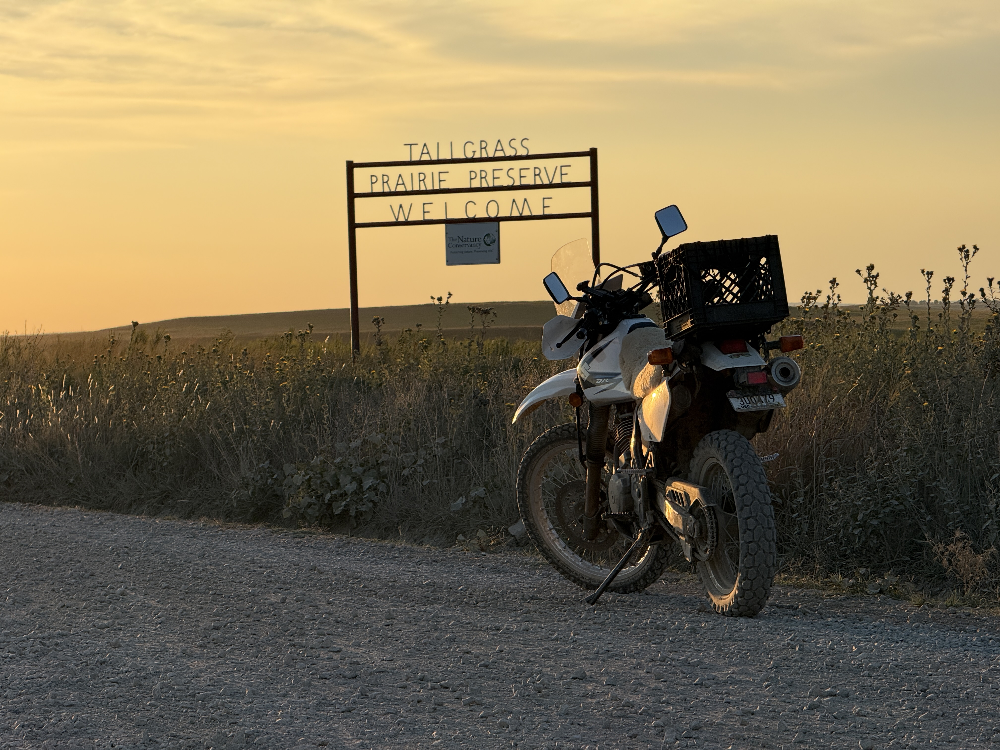
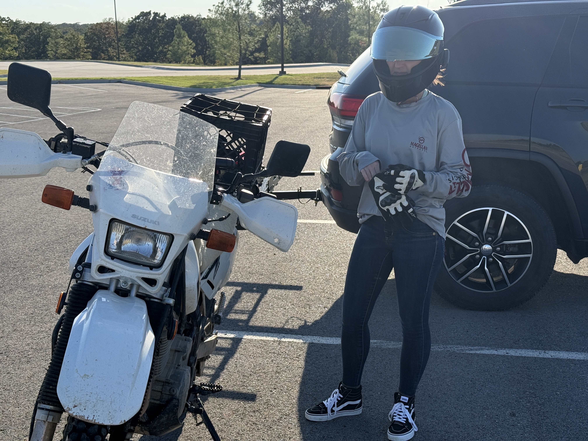
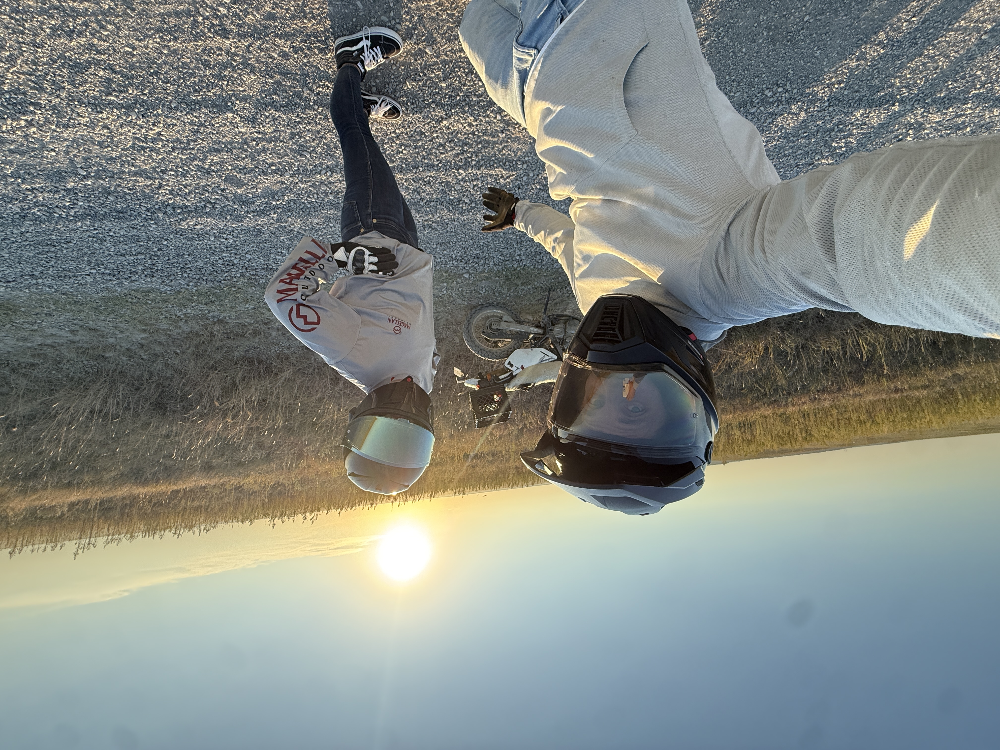
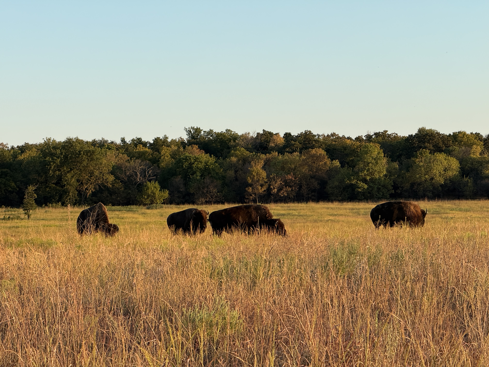
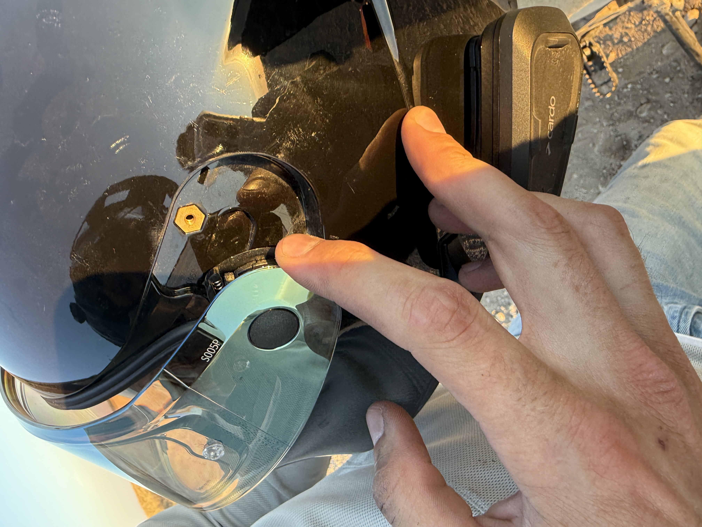
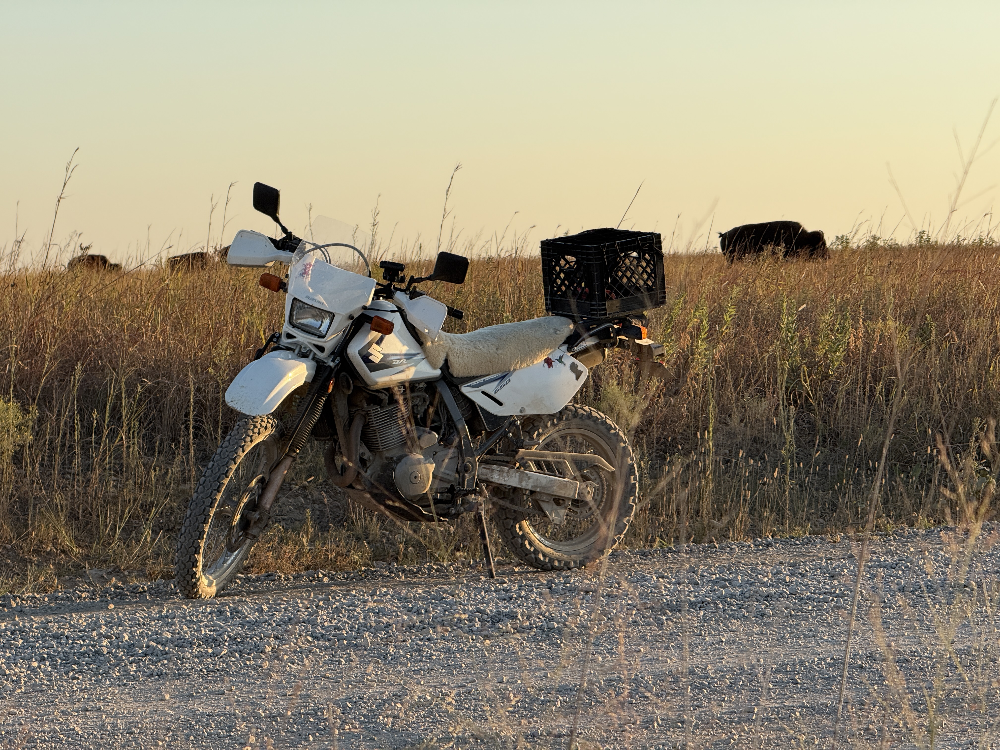

Somebody Boop Me Please

Life has been feeling stressful. My wife and I are not immune to the never-ending sense of hurry most people find themselves caught up in from time to time. That's okay, though. Because when you feel overwhelmed and trapped, sometimes a simple boop on the snoot can set you straight.
Over Labor Day weekend, we wanted to go enjoy a nice adventure, even though it's about a million degrees outside right now. The plan was to wake up around 6 a.m. on Saturday and head to the casino near Osage Hills State Park. I absolutely love that place and have spent countless hours falling off of the beautiful sandstone boulders it holds. We figured it would be safer to load Drasa, our faithful DR650, on the carrier and drive to the casino and base camp there. Lots of deer still moving on the backroads.
Well, it didn't matter. We stayed out way too late with our friends, listening to a '90s/2000s band in Tulsa. We haven't seen 1 a.m. in a long time. That was a super adventure by itself!
Throughout the day, we couldn't help but feel a little stir-crazy. So we attempted to take an evening ride out there and still target the casino, even though it was 106 degrees out. Let's send it.

We loaded up and got to the casino around 6:15 p.m. and unloaded the bike. We have a system now, so it's not too hard. I've dropped Drasa a few times, sadly. I'm convinced the more she is dropped, the more reliable she becomes.
We headed west into the blistering sun and the glare from it for nearly an hour before finding the entrance to the prairie. The backroads were super fun, and the old asphalt changed to dirt-packed roads.

The sun started to sink and give that beautiful glow around 7 p.m. We adventured, driving the rolling hills and checking out the pull-offs. We even found the herd of bison. More specifically, the Christina Adams Bison Herd. A free-roaming herd of nearly 2,500 bison. We found them by a beautiful pond.

Weirdly enough, my wife's helmet had broken, or the screws holding the mount to the visor had vibrated loose. Come on, Bell! We took her visor off and looked at the bison.

On the way out, we saw a few deer, one of which was climbing a tall hill by jumping and hopping. Very impressive.
We were overtaken by a truck and trailer with a dozer on it, nearly pushing us off the road, but it just helped us slow down more and enjoy all of God's creation.
I love the Osage Hills, and I love adventuring with my wife.

Whenever you feel like you are stuck in a rut, a boop may be just what you need. A mini adventure that doesn't have to be a grand ordeal or take multiple days across the headwaters of the Columbia River in British Columbia.
I hope everyone gets to have a boop soon!
Until next time.
← back to adventures